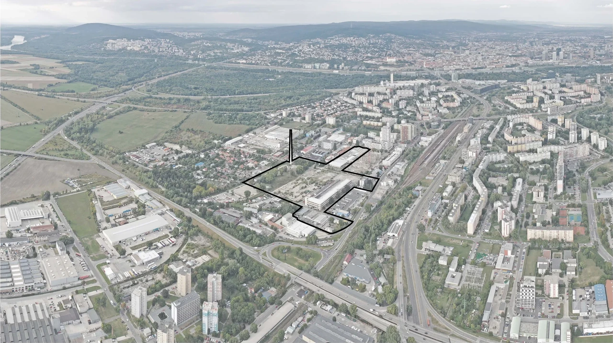

Nová Matadorka
The redevelopment strategy for these former rubber, enamelling and calendering plants had already been established. The work further developed selected buildings and tested alternative configurations within the zoning plan.
The design of two buildings was developed from early studies through to submitted zoning permit documentation, alongside work on layouts and coordination.
Matadorka — Compass architekti ↗

Site plan


- Parking
- Circulation
- Storage
- Building services
The drawings shown include only the parts Niki Jaško worked on that were retained in the final proposal.
Working within strict regulatory, spatial and technical constraints required balancing density, functionality, circulation and future constructability. One of the most challenging aspects was resolving the fire escape strategy, particularly where multiple evacuation routes converged at ground level.